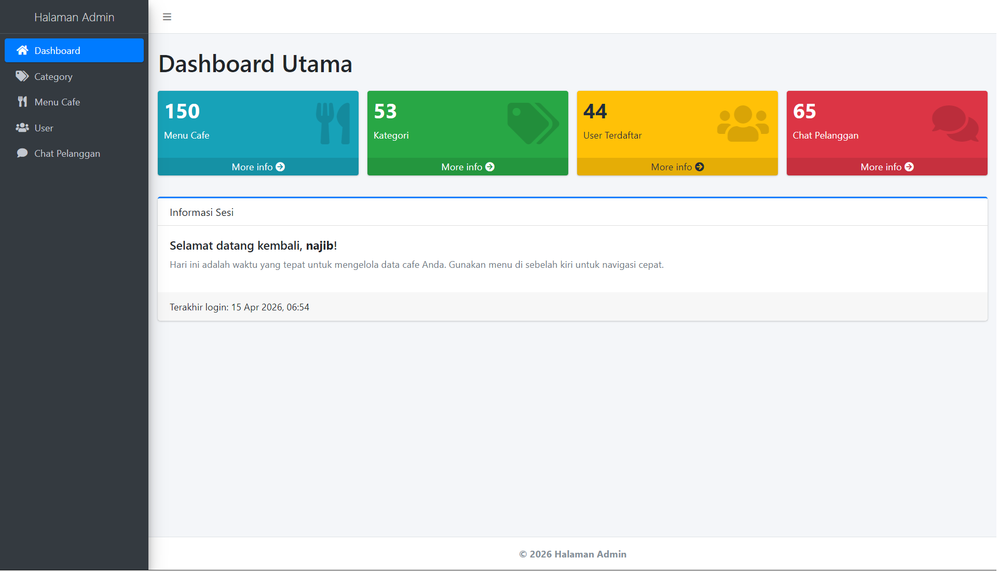
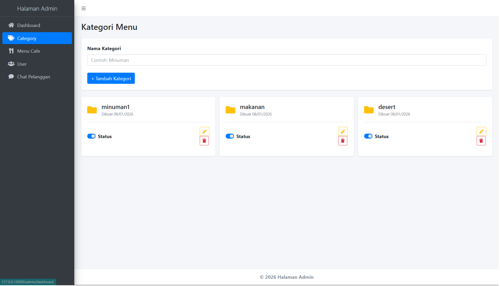
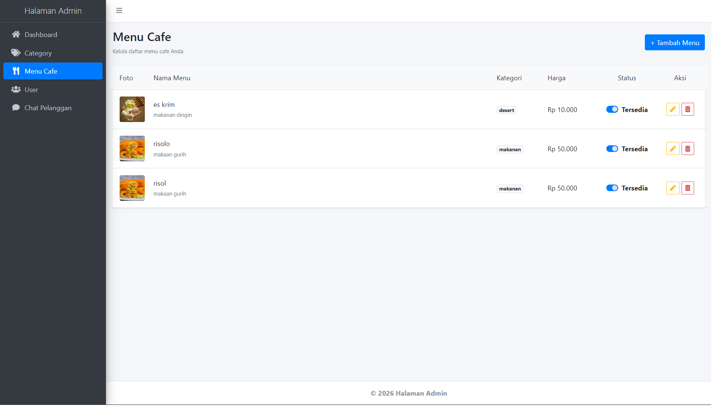
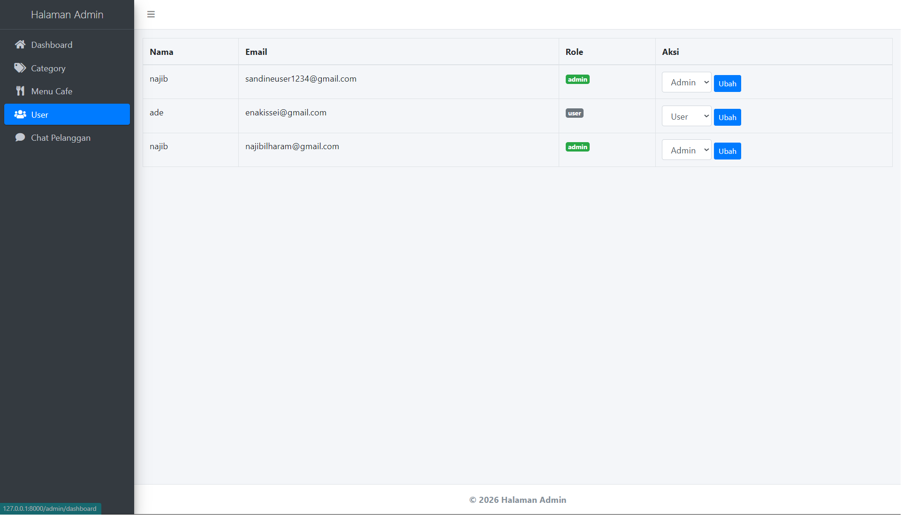

Sistem manajemen cafe berbasis web yang digunakan untuk mengelola menu, kategori, dan transaksi penjualan secara efisien.




Admin dapat menambahkan menu ke dalam kategori tertentu, kemudian sistem akan mencatat setiap transaksi yang dilakukan. Data transaksi dapat digunakan untuk memantau penjualan secara real-time melalui dashboard.